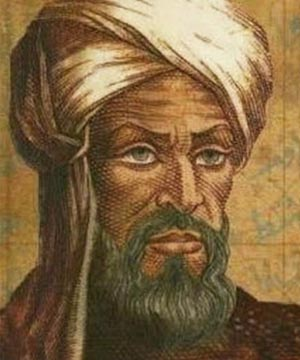
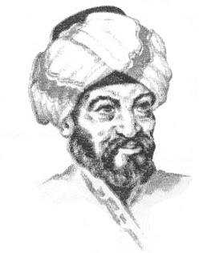
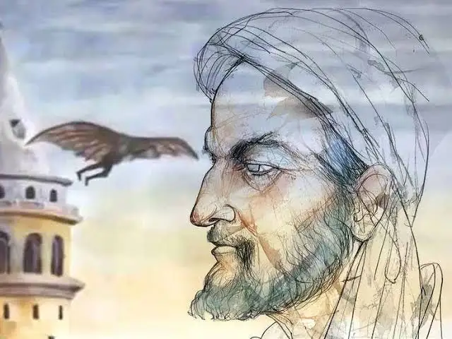
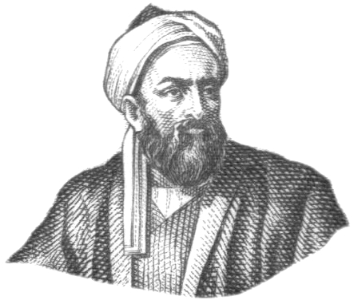
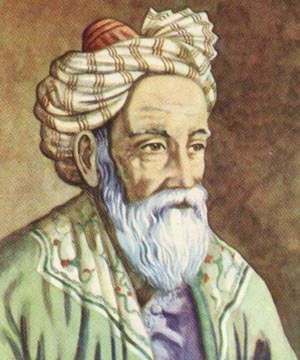
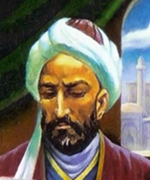

Al-Khwarizmi
Al-Khwarizmi
📍 Pèrsia · Segle IX
c. 780 – 850 dC
Pare de l'àlgebra i creador del concepte d'algorisme. Va treballar a la Casa de la Saviesa de Bagdad i va revolucionar les matemàtiques.
Àlgebra · AlgoritmesMatemàtics, filòsofs i enginyers que van canviar la humanitat

📍 Pèrsia · Segle IX
c. 780 – 850 dC
Pare de l'àlgebra i creador del concepte d'algorisme. Va treballar a la Casa de la Saviesa de Bagdad i va revolucionar les matemàtiques.
Àlgebra · Algoritmes
📍 Iraq · Segle IX
c. 801 – 873 dC
Filòsof i matemàtic. Va desenvolupar l'anàlisi de freqüència, tècnica fonamental en criptografia i seguretat informàtica.
Criptografia · Filosofia
📍 Al-Àndalus · Segle IX
810 – 887 dC
Inventor i enginyer andalusí. Pioner de l'aviació amb el seu cèlebre vol planejat, i va desenvolupar dispositius mecànics innovadors.
Enginyeria · Aviació
📍 Iraq (Bagdad) · Segle IX
c. 826 – 901 dC
Matemàtic i astrònom. Va descobrir els nombres amics, va generalitzar el teorema de Pitàgores i va reformar el sistema ptolemaic.
Àlgebra · Astronomia
📍 Àsia Central · Segles IX–X
872 – 950 dC
Filòsof i científic. Va desenvolupar teories de la lògica i classificació del coneixement, fonaments del pensament sistemàtic.
Lògica · Filosofia
📍 Pèrsia · Segles X–XI
c. 953 – 1029 dC
Matemàtic i enginyer persa. Va ser el primer a utilitzar la demostració per inducció, demostrant així el teorema del binomi.
Inducció · Àlgebra
📍 Iraq / Egipte · Segles X–XI
965 – 1040 dC
Pioner del mètode científic experimental. Va revolucionar l'òptica i l'estudi de la percepció visual.
Mètode Científic · Òptica
📍 Pèrsia (Uzbekistan) · Segles X–XI
973 – 1048 dC
Matemàtic i astrònom excepcional. Va fer avanços en càlcul i mesura precisa, essencials per a la geodèsia moderna.
Càlcul · Geodèsia
📍 Pèrsia · Segles X–XI
980 – 1037 dC
Metge i filòsof universal. Les seves contribucions a la lògica formal van establir les bases del pensament computacional.
Lògica · Medicina
📍 Pèrsia · Segles XI–XII
1048 – 1131 dC
Matemàtic, astrònom i poeta. Va resoldre totes les equacions cúbiques i va crear el calendari Jalali, encara en ús avui.
Matemàtiques · Astronomia
📍 Mesopotàmia · Segles XII–XIII
1136 – 1206 dC
Enginyer i inventor. Va dissenyar màquines automàtiques i rellotges programables, precursors directes de la computació.
Enginyeria · Automatisme
📍 Pèrsia · Segle XIII
1201 – 1274 dC
Pare de la trigonometria independent de l'astronomia. Va crear el "parell de Tusi", mecanisme revolucionari.
Trigonometria · Astronomia📍 Azerbaidjan / Iran · Segles XX–XXI
1921 – 2017 dC
Creador de la lògica difusa (fuzzy logic), pedra angular de la intel·ligència artificial i la robòtica moderna.
IA · Lògica Difusa